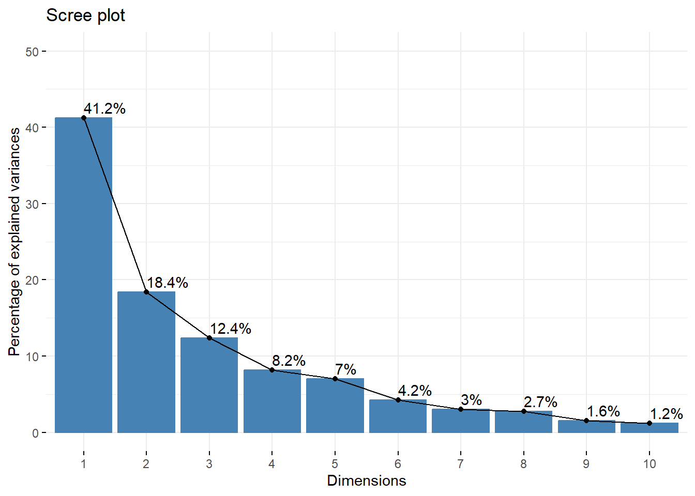
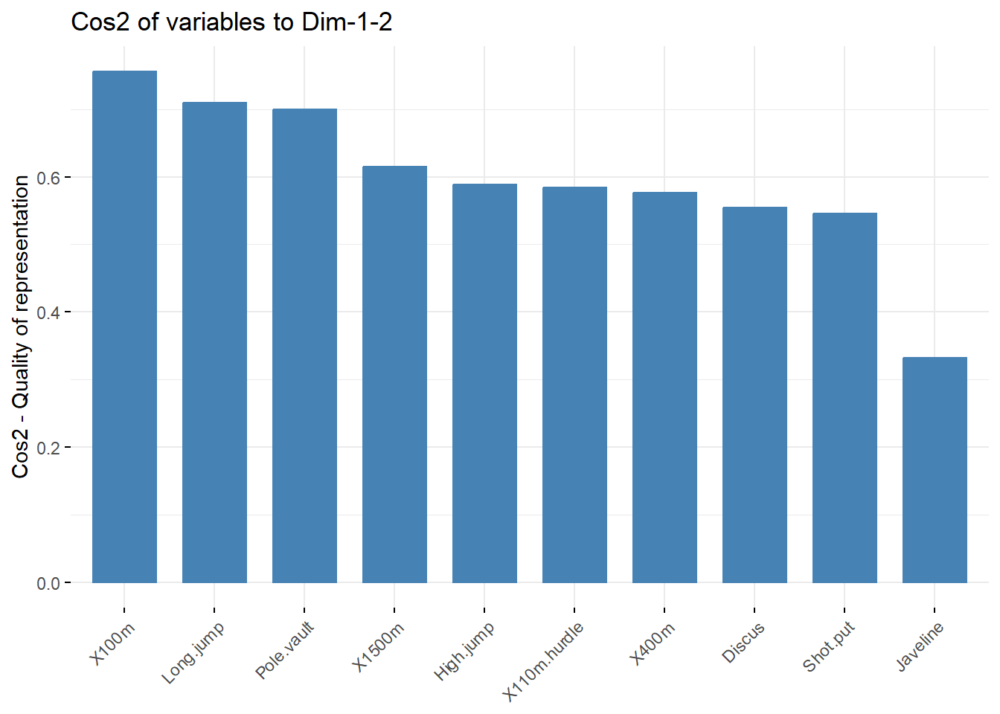
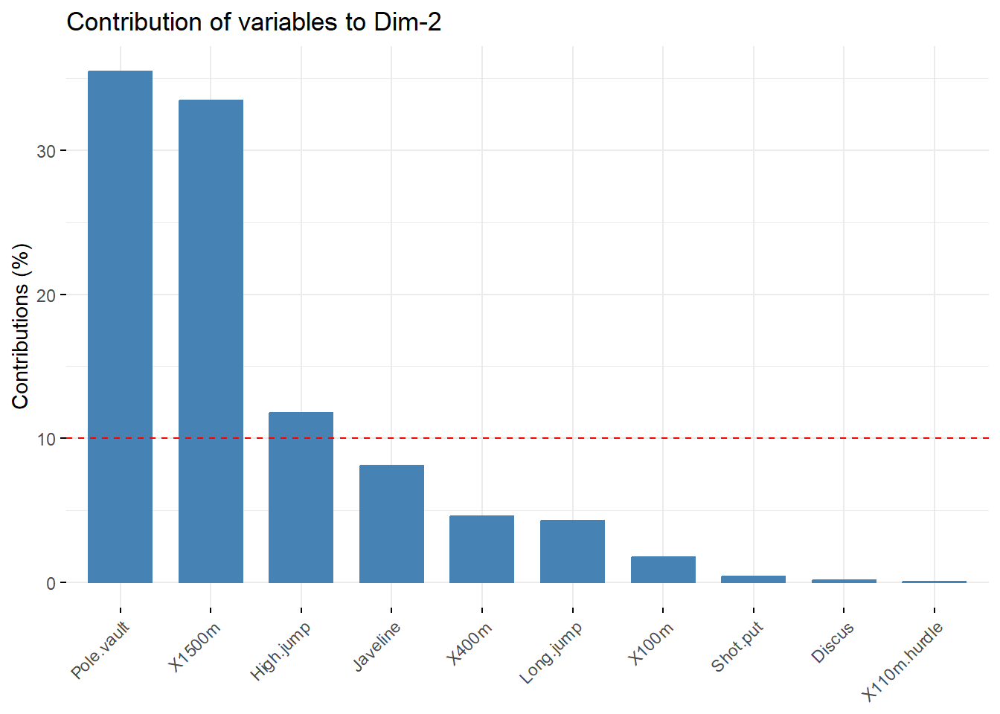
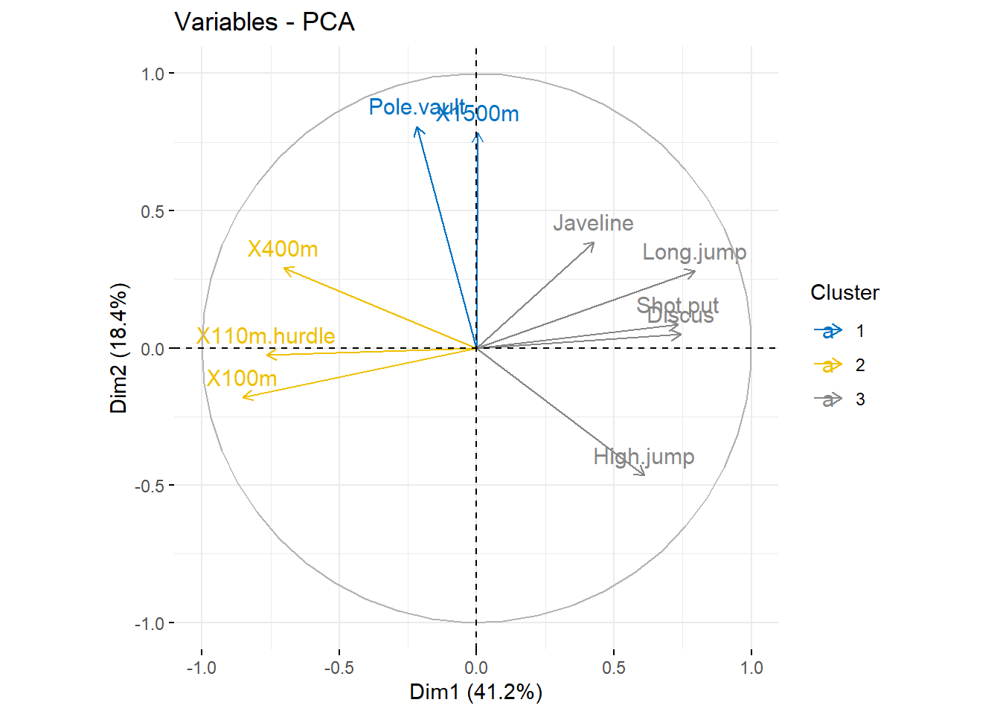
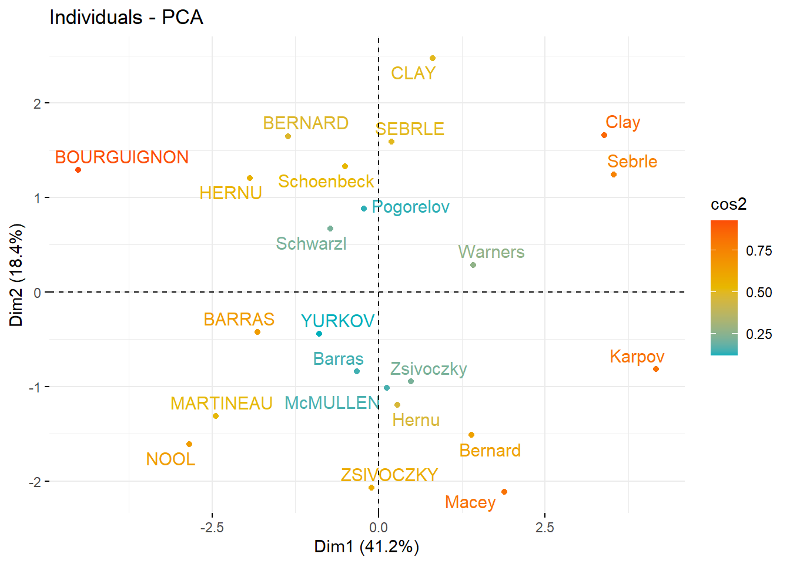
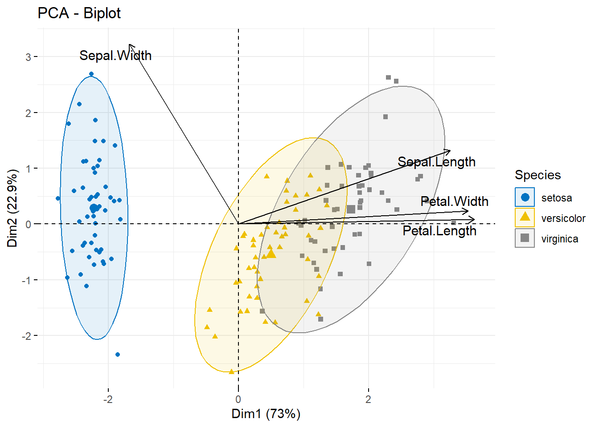
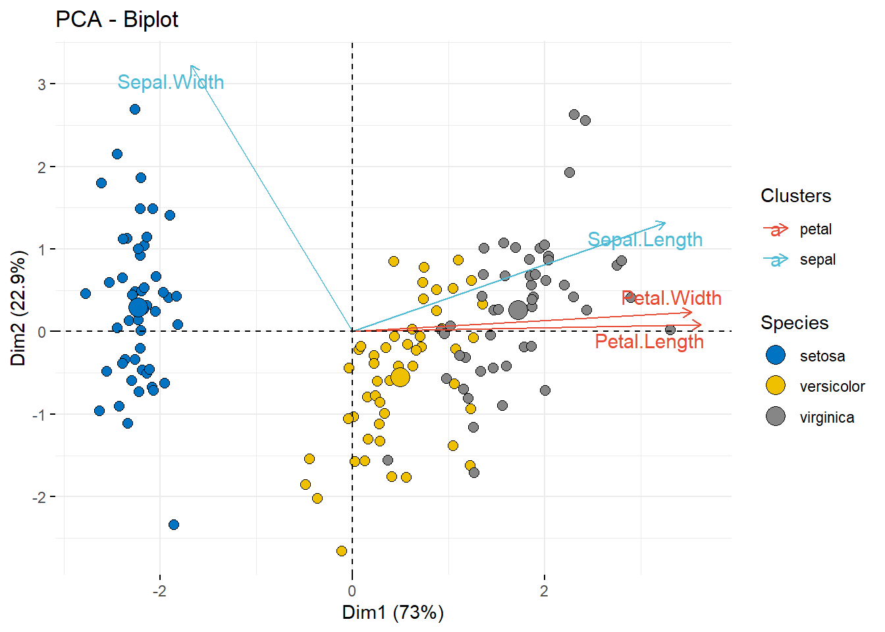
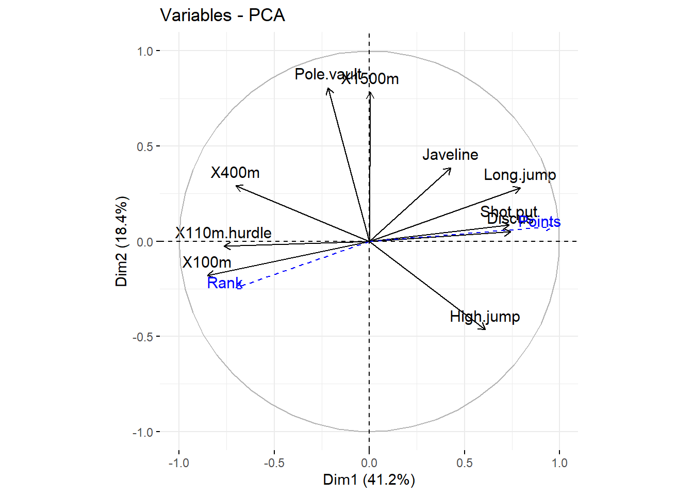
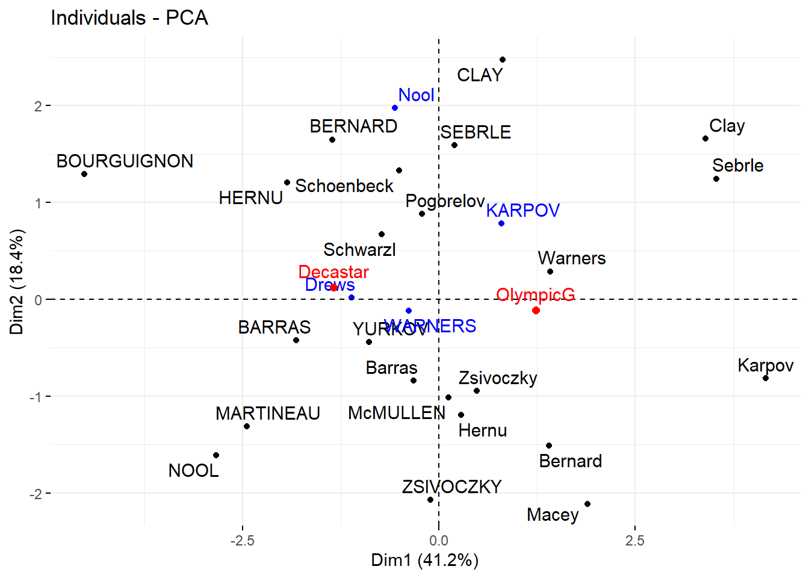
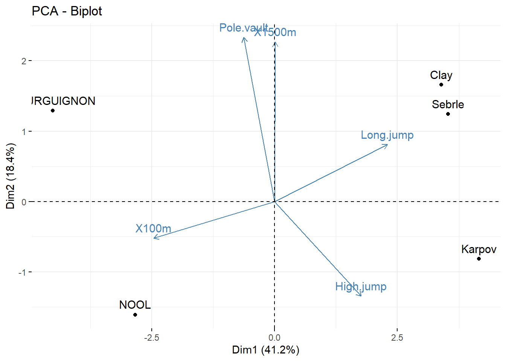

install.packages("factoextra")
install.packages("FactoMineR")11 Основы многомерного анализа: снижение размерности
11.1 Общие цели занятия и возможности библиотекиfactoextra
Многомерный анализ данных представляет собой сложную, но очень интересную задачу, которая часто встречается в деятельности аналитика данных. Задачи анализа взаимосвязей между переменными, их структурирование в виде кластеров, факторов, компонент и представление в визуально интерпретируемом виде часто встречаются, как в фундаментальных, так и прикладных исследованиях.
Многомерный анализ основан на принципе многомерной статистики, который предполагает наблюдение и анализ более чем одной переменной за один раз. Обычно многомерный анализ используется для решения ситуаций, когда в ходе научного эксперимента выполняются несколько измерений, и взаимосвязь между этими измерениями и их структурами имеет важное значение.
Многомерный анализ охватывает большой репертуар методов, включая факторный анализ, кластерный анализ, регрессионный анализ, метод главных компонент и другие, поэтому эта обширная тема, в которой мы изучим только некоторые направления анализа.
Многомерный анализ включает в себя:
- модели, основанные на многомерном нормальном распределении и генерализованные модели, а также распределений
- измерение и анализ взаимосвязей между отдельными переменными
- расчеты вероятностей на многомерных данных
- Изучение структур и паттернов в данных
Для подобных целей на языке R разработано множество библиотек, но определенными преимуществами обладает одна из них - factoextra. Ее цель заключается в извлечении результатов и визуализации эксплораторного многомерного анализа данных, включая:
Метод главных компонент - Principal Component Analysis (PCA) - анализирующий количественные (непрерывные) переменные путем сокращения размерности данных без потери важной информации (например, представление множества шкал психологических тестов в виде нескольких компонент или представление множества показателей социально-экономического развития регионов в виде нескольких интегральных показателей).
Корреспондентский анализ (анализ соответствий) - Correspondence Analysis (CA), выступающий расширением метода главных компонент для анализа больших таблиц сопряженности, образуемых на основе двух качественных переменных (категориальных данных)(например, продукты и их характеристики, метод хорошо подходит для вопросов с множественным выбором).
Множественный корреспондентский анализ, множественный анализ соответствий - Multiple Correspondence Analysis (MCA), являющийся адаптацией метода CA к таблице данных, содержащих более двух категориальных переменных (например, взаимосвязь между занятостью, национальностью и полом).
Множественный факторный анализ - Multiple Factor Analysis (MFA) - предназначен для работы с данными, где переменные организованы в группы, блоки или наборы (качественных и / или количественных) переменныех. MFA позволяет обнаружить общие структуры, присутствующие во всех или некоторых наборах данных. Выполняется в два этапа. На первом этапе на каждом наборе данных проводится анализ главных компонент, а затем исходные данные в каждом наборе «нормализуются» путем деления каждого элемента на квадратный корень из собственного значения, полученного из МГК на данном наборе. Затем, нормализованные данные объединяются в единую матрицу, над которой проводится общий анализ главных компонент, а индивидуальные наборы данных проектируются на результаты этого анализа, чтобы найти общие зависимости и расхождения (Abdi, Valentin, и др. 2007)
Иерархический множественный факторный анализ - Hierarchical Multiple Factor Analysis (HMFA): расширение метода MFA, подходящий для ситуации, где данные организованы в иерархические структуры.
Факторный анализ смешанных данных - Factor Analysis of Mixed Data (FAMD) - особый случай MFA, предназначенный для анализа данных, содержащих как количественные, так и качественные переменные.
Важно! Сам анализ проводится с помощью других библиотек, библиотека factoextra используется для извлечения результатов и визуализации.
Существует большое количество пакетов, в которых можно сделать анализ главных компонент, например, FactoMineR, ade4, stats, ca, MASS и ExPosition.
Результаты будут представлены по-разному, в зависимости от того, какие функции будут использованы. Помочь в интерпретации и визуализации полученных результатов многомерного анализа, например, кластерного анализа или результатов снижения размерности, нам как раз и поможет библиотека factoextra.
В рамках данного занятия мы будем использовать библиотеку FactoMineR (Lê, Josse, и Husson 2008) для расчетов, а библиотеку factoextra для извлечения и анализа результатов.
С какими методами может работать библиотека factoextra:

11.1.1 Как сделать правильный выбор?
Выбор метода для анализа будет зависеть от формата данных и их структуры:
Так, например, если у нас количественные данные, то нам подойдет метод главных компонент, а если качественные, то в зависимости от их количества - анализ соответствий - простой или множественный.
В случае, если данные разной природы, то нам лучше обратиться к смешанным методам - иерархическому множественному факторному анализу или факторному анализу для смешанных данных. . 
11.1.2 Установка и загрузка библиотек
Устанавливаем библиотеки:
Загружаем:
library("factoextra")Warning: пакет 'factoextra' был собран под R версии 4.3.3Загрузка требуемого пакета: ggplot2Welcome! Want to learn more? See two factoextra-related books at https://goo.gl/ve3WBalibrary("FactoMineR")Warning: пакет 'FactoMineR' был собран под R версии 4.3.311.2 Метод главных компонент (Principal component analysis)
Метод главных компонент (PCA) позволяет суммировать и визуализировать информацию, представленную в наборе данных, где некоторые индивиды / наблюдения описываются через большое количество взаимосвязанных друг с другом количественных переменных. Каждая переменная может быть представлена в качестве отдельного измерения. Если переменных больше трех, то визуализация результатов становится затруднительным.
Метод главных компонент извлекает информацию из многомерной таблицы данных \(n \times k\) и представляет ее в виде новых переменных, чье количество меньше количества исходных переменных.
Это новые переменные и называются главные компоненты, они являются линейной комбинацией исходных переменных. Количество главных компонент всегда меньше или равно количеству исходных переменных.
Информация набора данных соответствует дисперсии переменных, которые в него входят.
Цель МГК заключается в идентификации главных компонент, описывающих максимум дисперсии переменных. Снижение размерности заключается в определении ведущих направлений (векторов), или главных компонент, показывающих изменение данных.
Метод МГК предполагает, что эти главные направления описывают большую часть дисперсии, поэтому являются более важными.

Другими словами, МГК сокращает размерность данных, путем выделения двух или трех самых важных компонент, которые мы может визуализировать графически и минимальной потерей информации.
Таким образом, главными задачами метода главных компонент являются:
- выявление скрытой структуры в наборе данных,
- снизить размерность данных, путем удаления статистического шума и избыточных переменных
- идентифицировать взаимосвязанные переменные
На практике этот метод реализуется двумя возможными подходами:
- путем разложения исходной матрицы взаимосвязей (ковариаций или корреляций) на произведение матриц собственных значений и собственных векторов
- путем сингулярного разложения данной матрицы.
11.2.1 Собственные значения и собственные вектора
Допустим наши данные представлены в матрице \(\mathbf X\) размера \(n \times p\), где \(n\) – количество наблюдений, а \(p\) – количество признаков. Наши данные должны быть центрированы, то есть в каждом столбце из каждого элемента должно быть вычтено среднее значение, так чтобы среднее значение по каждому признаку равнялось нулю.
Тогда \(p \times p\) матрица ковариаций \(\mathbf C\) может быть представлена как:
\[\mathbf C = \mathbf X^\top \mathbf X/(n-1)\]
Поскольку эта матрица симметричная, она может быть диагонализирована, то есть представлена в виде произведения трех матриц, в результате чего находится соответствующая диагональной матрицы собственных значений:
\[\mathbf C = \mathbf V \mathbf L \mathbf V^\top,\]
где \(\mathbf V\) - это матрица собственных векторов,а \(\mathbf L\) - это диагональная матрица, на диагонали которой находятся собственные значения \(λ_i\), упорядоченные по убыванию:
\[\mathbf L = \begin{bmatrix} \lambda_1 & & & \\ & \lambda_2 & & \\ & & \lambda_{...} & \\ & & & \lambda_p \\ \end{bmatrix}\]
Собственные вектора называются главными осями или главными направлениями.
Проекции данных на главные оси собственно и называются главными компонентами, представляющими собой новые, трансформированные переменные.
Главная компонента \(j\) находится в \(j\) столбце матрицы \(\mathbf {XV}\).
Координаты \(i-ой\) точки данных в новом пространстве главных компонент заданы \(i-й\) строкой \(\mathbf XV\).
Для нахождения собственных значений решается характеристическое уравнение:
\[|\mathbf C-\mathbf \Lambda \mathbf I|\vec{x}=0,\]
предполагающее вычисление детерминанта \(|\mathbf C-\mathbf \Lambda \mathbf I|\) и корней уравнения степени \(n\), в результате которого находятся \(\lambda_1, \lambda_2, ... \lambda_p\).
Далее, путем подстановки собственных значений в исходное уравнение, для каждого \(\lambda\) находится собственный вектор.
Фундаментальным для метода главных компонент является уравнение:
\[\mathbf C=\mathbf A \mathbf {A}',\]
где \(\mathbf A\) – матрица нагрузок, а \(\mathbf {A}'\) - транспонированная ей матрица.
Нагрузки получаются путем умножения собственных векторов на квадрат из собственных значений:
\[\mathbf A= \mathbf V \sqrt{\mathbf \Lambda}\]
Таким образом, главную компоненту можно представить как линейную комбинацию исходных данных и компонентных нагрузок.
Пример с первой компонентой:
\[PC_k = a_{k1}X_1 + a_{k2}X_2 + … + a_{kp}X_p,\]
где a\(_ij\) является нагрузкой переменной \(x_j\) по компоненте \(PC_i\), \(x_j\) – \(j-ая\) переменная матрицы признаков \(\mathbf X\).
11.2.2 Сингулярное разложение
Когда мы осуществляем сингулярное разложение матрицы взаимосвязей, у нас получается несколько иная картина:
\[\mathbf X = \mathbf U \mathbf S \mathbf V^\top,\]
где \(\mathbf U\) - являются унитарной матрицей (столбцы которой называются левыми сингулярными векторами), \(\mathbf S\) - диагональная матрица сингулярных значений \(s_i\), а столбцы матрицы \(\mathbf V\) называются правыми сингулярными векторами.
Правые сингулярные вектора – это и есть собственные вектора \(A^\top A\), то есть между методами есть тесная взаимосвязь, и \(\lambda_i = s_i^2/(n-1)\).
Пример: Рассмотрим пример с данными соревнований по десятиборью, в которые входят следующие дисциплины:
- “X100m” - бег на 100 метров
- “Long.jump” - прыжки в длину
- “Shot.put” - толкание ядра
- “High.jump” - прыжки в высоту
- “X400m” - бег на 400 метров
- “X110m.hurdle” - бег с препятсвиями
- “Discus” - метание диска
- “Pole.vault” - прыжок с шестом
- “Javeline” - метание копья
- “X1500m” - без на 1500 метров

data(decathlon2)
head(decathlon2) X100m Long.jump Shot.put High.jump X400m X110m.hurdle Discus
SEBRLE 11.04 7.58 14.83 2.07 49.81 14.69 43.75
CLAY 10.76 7.40 14.26 1.86 49.37 14.05 50.72
BERNARD 11.02 7.23 14.25 1.92 48.93 14.99 40.87
YURKOV 11.34 7.09 15.19 2.10 50.42 15.31 46.26
ZSIVOCZKY 11.13 7.30 13.48 2.01 48.62 14.17 45.67
McMULLEN 10.83 7.31 13.76 2.13 49.91 14.38 44.41
Pole.vault Javeline X1500m Rank Points Competition
SEBRLE 5.02 63.19 291.7 1 8217 Decastar
CLAY 4.92 60.15 301.5 2 8122 Decastar
BERNARD 5.32 62.77 280.1 4 8067 Decastar
YURKOV 4.72 63.44 276.4 5 8036 Decastar
ZSIVOCZKY 4.42 55.37 268.0 7 8004 Decastar
McMULLEN 4.42 56.37 285.1 8 7995 Decastar
Итак, наши данные описывают выполнение атлетами испытаний в двух типах спортивных соревнований (Desctar и OlympicG). Набор содержит информацию о 27 спортсменах и 13 переменных.
Активные спортсмены (голубой цвел, строки 1:23) : Данные, которые будут использованы для проведения анализа методом главных компонент. Дополнительные спортсмены (синий цвет, строки 24:27) : Координаты по этим спортсменам будут использованы для предсказания параметров с помощью МГК по информации полученной по активным спортсменам / переменным Активные переменные (розовый цвет, столбцы 1:10) : переменные, используемые в МГК Дополнительные переменные: используются для предсказания, включая:
Дополнительные количественные переменные (красные): Столбцы 11 и 12 соответствуют рангу и баллам.
Дополнительные качественные переменные (зеленые): данные по соревнованиям (категориальная переменная).
Начнем с разделения наших данных на активные и дополнительные части:
decathlon2.active <- decathlon2[1:23, 1:10]
head(decathlon2.active[, 1:6], 4) X100m Long.jump Shot.put High.jump X400m X110m.hurdle
SEBRLE 11.04 7.58 14.83 2.07 49.81 14.69
CLAY 10.76 7.40 14.26 1.86 49.37 14.05
BERNARD 11.02 7.23 14.25 1.92 48.93 14.99
YURKOV 11.34 7.09 15.19 2.10 50.42 15.3111.2.3 Стандартизация данных
Когда проводится анализ главных компонент, переменные часто стандартизируются. Эта процедура особенно рекомендуется тогда, когда переменные измеряются в разных единицах (килограммы, сантиметры и пр.).
Главная цель стандартизации - сделать переменные сопоставимыми. Обычно стандартизация происходит таким образом, чтобы переменная имела 1) стандартное отклонение равным 1, и 2) среднее значение 0.
Типичная формула для стандартизации:
\[\frac{x_i−mean(x)}{sd(x)}\]
Где \(mean(x)\) это среднее значение, а \(sd(x)\) стандартное отклонение (SD).
Вы уже знакомы с функцией scale(), которая может быть использована для стандартизации.
Однако, стандартизация может быть осуществлена сразу в процессе анализа (это действие по умолчанию).
Проведем анализ главных компонент на активных данных по декатлону:
res.pca <- PCA(decathlon2.active, graph = FALSE)На выходе функции мы получаем следующие результаты:
print(res.pca)**Results for the Principal Component Analysis (PCA)**
The analysis was performed on 23 individuals, described by 10 variables
*The results are available in the following objects:
name description
1 "$eig" "eigenvalues"
2 "$var" "results for the variables"
3 "$var$coord" "coord. for the variables"
4 "$var$cor" "correlations variables - dimensions"
5 "$var$cos2" "cos2 for the variables"
6 "$var$contrib" "contributions of the variables"
7 "$ind" "results for the individuals"
8 "$ind$coord" "coord. for the individuals"
9 "$ind$cos2" "cos2 for the individuals"
10 "$ind$contrib" "contributions of the individuals"
11 "$call" "summary statistics"
12 "$call$centre" "mean of the variables"
13 "$call$ecart.type" "standard error of the variables"
14 "$call$row.w" "weights for the individuals"
15 "$call$col.w" "weights for the variables" 11.2.4 Визуализация и интерпретация
Мы будем использовать библиотеку factoextra, чтобы разобраться с результатами анализа.
Полезные функции:
get_eigenvalue(res.pca): - извлекает собственные значения / дисперсию главных компонентfviz_eig(res.pca): визуализация собственных значенийget_pca_ind(res.pca),get_pca_var(res.pca)- извлекает результаты для наблюдений и переменныхfviz_pca_ind(res.pca),fviz_pca_var(res.pca)- визуализирует результаты по наблюдениям и переменнымfviz_pca_biplot(res.pca)- создает двойной график (биплот) по индивидам и переменным
11.2.5 Собственные значения / Дисперсия
Собственные значения показывают, какую долю дисперсии переменных представляет каждая компонента. Собственные значения больше для первых компонент и меньше - для последующих.
Собственные значения могут быть использованы для определения количества главных компонент, которые достойны рассмотрения.
Для получения информации о собственных значениях и дисперсии можно использовать следующий код:
eig.val <- get_eigenvalue(res.pca)
eig.val eigenvalue variance.percent cumulative.variance.percent
Dim.1 4.1242133 41.242133 41.24213
Dim.2 1.8385309 18.385309 59.62744
Dim.3 1.2391403 12.391403 72.01885
Dim.4 0.8194402 8.194402 80.21325
Dim.5 0.7015528 7.015528 87.22878
Dim.6 0.4228828 4.228828 91.45760
Dim.7 0.3025817 3.025817 94.48342
Dim.8 0.2744700 2.744700 97.22812
Dim.9 0.1552169 1.552169 98.78029
Dim.10 0.1219710 1.219710 100.00000Сумма всех собственных значений равняется 10, то есть общему количеству переменных.
Доля дисперсии, объясняемой каждым собственным значением, представлена во второй колонке.
Например, если 4.124 разделить на 10 получится 0.4124, или около 41.24% изменчивости, объясненной первой компонентой.
Кумулятивный процент представлен в последнем столбце
Видим, что четыре первых компоненты объясняют 80% дисперсии.
Собственные значения могут быть использованы для определения количества компонент. По правилу Кайзера собственное значение > 1 обозначает, что эта главная компонента описывает дисперсию хотя бы одной переменной.
Мы можем также ограничить число компонент теми, которые описывают какую-то определенную долю дисперсии (например, 70%).
Единого правила не существует!
В нашем анализе первые три компоненты объясняют 72% дисперсии, это достаточно приемлемый результат.
Альтернативный метод заключается в рассмотрении диаграммы рассеяния собственных значений, упорядоченных по убыванию (правило локтя или каменистой осыпи).
Отбирается количество компонент выше точки, фиксирующей спад собственных значений, которые становятся очень близки друг другу (Jollife 2002, Peres-Neto, Jackson, and Somers (2005)).
Попробуем сделать такой график:
fviz_eig(res.pca, addlabels = TRUE, ylim = c(0, 50))
11.2.6 Результаты. Работаем с переменными
Самый простой способ извлечь информацию о переменных, это воспользоваться функцией get_pca_var().
Эта функция предоставляет список матриц, содержащих результаты для активных переменных (координаты, корреляцию между переменными и осями, квадрат косинуса и вклады).
var <- get_pca_var(res.pca)
varPrincipal Component Analysis Results for variables
===================================================
Name Description
1 "$coord" "Coordinates for the variables"
2 "$cor" "Correlations between variables and dimensions"
3 "$cos2" "Cos2 for the variables"
4 "$contrib" "contributions of the variables" Рассмотрим эти параметры подробнее
- var$coord: координаты, используемые для создания графика (проекции, нагрузки)
- var$cos2: квадрат косинуса - качество представленности переменных в факторном пространстве Рассчитывается как квадрат координат: var.cos2 = var.coord * var.coord.
- var$contrib: вклады - показывает вклад переменной в главную компоненту (в процентах): (var.cos2 * 100) / (total cos2 of the component). Чем важнее переменная для этой компоненты, тем выше у нее вклад.
Мы можем создать графики, основываясь либо на: 1) их качестве (cos2) или 2) на их вкладах в главные компоненты
Представим результаты:
# Координаты
head(var$coord)
# Cos2: качество анализа
head(var$cos2)
# Вклады в компоненты
head(var$contrib)Рассмотрим, как визуализировать результаты анализа по отдельным наблюдениям и переменным и как сделать выводы о взаимосвязах между ними.
11.2.7 Корреляционный круг
Корреляция между переменной и главной компонентой используется в качестве координаты переменной на графике.
Представление переменных зависит от графика наблюдений, наблюдения представлены своими проекциями, тогда как переменные - корреляциями (Abdi и Williams 2010).
# Координаты переменных
head(var$coord, 4) Dim.1 Dim.2 Dim.3 Dim.4 Dim.5
X100m -0.8506257 -0.17939806 0.3015564 0.0335732 -0.1944440
Long.jump 0.7941806 0.28085695 -0.1905465 -0.1153896 0.2331567
Shot.put 0.7339127 0.08540412 0.5175978 0.1284684 -0.2488129
High.jump 0.6100840 -0.46521415 0.3300852 0.1445501 0.4027002Представим переменные в виде графика:
fviz_pca_var(res.pca, col.var = "black")Такой график показывает взаимосвязи между всеми переменными. Он может быть интерпретирован следующим образом:
- переменные с положительной корреляцией сгруппированы вместе;
- переменные, имеющие отрицательную корреляцию, находятся на разных сторонах графика (квадрантах);
- расстояние между переменными и началом координат показывает качество переменных в факторном пространстве;
- переменные, расположенные как можно дальше от начала координат, представлены лучше.
11.2.8 Качество представленности переменных
Качество представленности переменных в факторном пространстве называется cos2 (квадрат косинуса, квадрат координаты).
Их можно «добыть» следующим образом:
head(var$cos2, 4) Dim.1 Dim.2 Dim.3 Dim.4 Dim.5
X100m 0.7235641 0.032183664 0.09093628 0.00112716 0.03780845
Long.jump 0.6307229 0.078880629 0.03630798 0.01331475 0.05436203
Shot.put 0.5386279 0.007293864 0.26790749 0.01650412 0.06190783
High.jump 0.3722025 0.216424207 0.10895622 0.02089474 0.16216747Мы можем визуализировать этот показатель с помощью очень интересного графика из библиотеки corrplot (не забываем устанавливать):
library("corrplot")corrplot 0.92 loadedcorrplot(var$cos2, is.corr=FALSE)Можно сделать и столбчатую диаграмму (по первым двум компонентам:
fviz_cos2(res.pca, choice = "var", axes = 1:2)
Отметим, что: - высокие значения cos2 обозначают, что переменная хорошо описывается главной компонентой. В этом случае переменная располагается ближе к окружности на графике. - низкие значения cos2 обозначают, что переменные на очень хорошо представлены полученной компонентной структурой. В этом случае переменная - ближе к центру.
Сумма всех квадратов косинуса по всем компонентам равна 1 - то есть 100% дисперсии.
Сделаем цветной график, так, чтобы: - переменные с низкими значениями cos2 будут окрашены в голубой цвет - переменные со средними значениями cos2 будут иметь оранжевый цвет - переменные с высокими значениями cos2 будут иметь красный цвет
fviz_pca_var(res.pca, col.var = "cos2",
gradient.cols = c("#00AFBB", "#E7B800", "#FC4E07"),
repel = TRUE # Avoid text overlapping
)Можно представить не с помощью цвета, а с помощью прозрачности:
fviz_pca_var(res.pca, alpha.var = "cos2")11.2.9 Оценка вклада переменной в компоненту
Вклад переменной оценку дисперсии данной главной компоненты представлен в процентном соотношении.
Переменные, которые коррелируют и с первой компонентой PC1 (Dim.1) и со второй компонентой (PC2, Dim.2) являются самыми главными в описании измечивости данных в наборе.
Переменные, которые не коррелируют ни с одной компонентой или коррелируют с последними компонентами не являются важными и могут быть исключены из анализа.
Посмотрим вклад переменных:
head(var$contrib, 4) Dim.1 Dim.2 Dim.3 Dim.4 Dim.5
X100m 17.544293 1.7505098 7.338659 0.1375524 5.389252
Long.jump 15.293168 4.2904162 2.930094 1.6248594 7.748815
Shot.put 13.060137 0.3967224 21.620432 2.0140727 8.824401
High.jump 9.024811 11.7715838 8.792888 2.5498795 23.115504Чем выше вклад, тем больше переменная “вкладывает” в компоненту.
Воспользуемся функцией corrplot, чтобы это визуализировать:
library("corrplot")
corrplot(var$contrib, is.corr=FALSE)Функция fviz_contrib() может быть использована для того, чтобы построить столбчатую диаграмму по данному показателю:
# Вклад переменных в PC1
fviz_contrib(res.pca, choice = "var", axes = 1, top = 10)# Вклад переменных в PC2
fviz_contrib(res.pca, choice = "var", axes = 2, top = 10)
Общий вклад переменных в обе компоненты:
fviz_contrib(res.pca, choice = "var", axes = 1:2, top = 10)Красная линия показывает некоторый средний вклад. Если бы вклад всех переменных был бы одинаковый, то каждая вносила бы по 1/10 = 10%. Соответственно, переменная, превышающая данный уровень, может считаться более важной, а менее - незначимой.
Самые важные переменные в нашем анализе - X100m, Long.jump (прыжок в длину) и Pole.vault (прыжок с шестом).
Вклад переменных может быть визуализирован следующим образом:
fviz_pca_var(res.pca, col.var = "contrib",
gradient.cols = c("#00AFBB", "#E7B800", "#FC4E07")
)11.2.10 Анализ по группам
Мы можем также провести анализ по отдельным группам и использовать данные о группировке в визулизации.
Так как у нас нет группирующей переменной, давайте ее создадим.
Мы разобьем переменные на три кластера, используя метод kmeans, и затем информацию о кластере включим в график в качестве группирующей переменной.
# Сначала - кластерный анализ, создаем 3 кластера на основе координат
set.seed(123)
res.km <- kmeans(var$coord, centers = 3, nstart = 25)
grp <- as.factor(res.km$cluster)
# Распределяем переменные по кластерам
fviz_pca_var(res.pca, col.var = grp,
palette = c("#0073C2FF", "#EFC000FF", "#868686FF"),
legend.title = "Cluster")
11.2.11 Описание отдельных измерений
В предыдущем разделе мы проанализировали переменные с позиции их вклада в главные компоненты.
Возникает вопросы, что же эти компоненты из себя представляют.
Функцияdimdesc() может быть использована для анализа отдельных измерений:
res.desc <- dimdesc(res.pca, axes = c(1,2), proba = 0.05)
# Описание измерения 1
res.desc$Dim.1
Link between the variable and the continuous variables (R-square)
=================================================================================
correlation p.value
Long.jump 0.7941806 6.059893e-06
Discus 0.7432090 4.842563e-05
Shot.put 0.7339127 6.723102e-05
High.jump 0.6100840 1.993677e-03
Javeline 0.4282266 4.149192e-02
X400m -0.7016034 1.910387e-04
X110m.hurdle -0.7641252 2.195812e-05
X100m -0.8506257 2.727129e-07В результатах выше, $quanti означает результаты по количественным переменным, переменные отсортированы по значению p-value.
11.2.12 Анализ отдельных наблюдений
Результаты по отдельным наблюдениям могут быть получены с помощью аналогичной функции get_pca_ind(). Так же, как и get_pca_var(), функция get_pca_ind() позволяет получить список матриц с результатами по наблюдениям (координаты, корреляции с осями, квадрат косинуса и вклады)
ind <- get_pca_ind(res.pca)
indPrincipal Component Analysis Results for individuals
===================================================
Name Description
1 "$coord" "Coordinates for the individuals"
2 "$cos2" "Cos2 for the individuals"
3 "$contrib" "contributions of the individuals"Посмотрим результаты по отдельным показателям
# Координаты наблюдений
head(ind$coord) Dim.1 Dim.2 Dim.3 Dim.4 Dim.5
SEBRLE 0.1955047 1.5890567 0.6424912 0.08389652 1.16829387
CLAY 0.8078795 2.4748137 -1.3873827 1.29838232 -0.82498206
BERNARD -1.3591340 1.6480950 0.2005584 -1.96409420 0.08419345
YURKOV -0.8889532 -0.4426067 2.5295843 0.71290837 0.40782264
ZSIVOCZKY -0.1081216 -2.0688377 -1.3342591 -0.10152796 -0.20145217
McMULLEN 0.1212195 -1.0139102 -0.8625170 1.34164291 1.62151286# Качество
head(ind$cos2) Dim.1 Dim.2 Dim.3 Dim.4 Dim.5
SEBRLE 0.007530179 0.49747323 0.081325232 0.001386688 0.2689026575
CLAY 0.048701249 0.45701660 0.143628117 0.125791741 0.0507850580
BERNARD 0.197199804 0.28996555 0.004294015 0.411819183 0.0007567259
YURKOV 0.096109800 0.02382571 0.778230322 0.061812637 0.0202279796
ZSIVOCZKY 0.001574385 0.57641944 0.239754152 0.001388216 0.0054654972
McMULLEN 0.002175437 0.15219499 0.110137872 0.266486530 0.3892621478# Вклады
head(ind$contrib) Dim.1 Dim.2 Dim.3 Dim.4 Dim.5
SEBRLE 0.04029447 5.9714533 1.4483919 0.03734589 8.45894063
CLAY 0.68805664 14.4839248 6.7537381 8.94458283 4.21794385
BERNARD 1.94740183 6.4234107 0.1411345 20.46819433 0.04393073
YURKOV 0.83308415 0.4632733 22.4517396 2.69663605 1.03075263
ZSIVOCZKY 0.01232413 10.1217143 6.2464325 0.05469230 0.25151025
McMULLEN 0.01549089 2.4310854 2.6102794 9.55055888 16.2949330411.2.13 Графики качества и вкладов
Функция fviz_pca_ind() помогает получить график по наблюдениям (спортсменам):
fviz_pca_ind(res.pca)Как и в случае с переменными, мы можем раскрасить наблюдения в зависимости от значений cos2:
fviz_pca_ind(res.pca, col.ind = "cos2",
gradient.cols = c("#00AFBB", "#E7B800", "#FC4E07"),
repel = TRUE # Avoid text overlapping (slow if many points)
)
Отметим, что наблюдения с похожими значениями на графике располагаются близко друг к другу.
Столбчатый график по наблюдениям:
fviz_cos2(res.pca, choice = "ind")Визуализация вклада спортсменов в первые две компоненты:
fviz_contrib(res.pca, choice = "ind", axes = 1:2)11.2.14 Анализ по группам
Чтобы показать разбивку по группам, давайте воспользуемся известным нам набором по ирисам.
Переменная вида “Species” будет использована в качестве группирующей переменной:
iris.pca <- PCA(iris[,-5], graph = FALSE)Создаем график:
fviz_pca_ind(iris.pca,
geom.ind = "point", # показываем только точки, не метки
col.ind = iris$Species, # группирующая переменная
palette = c("#00AFBB", "#E7B800", "#FC4E07"),
addEllipses = TRUE, # эллипсы концентрации
legend.title = "Группы"
)
11.2.15 Создаем биплот
Это, конечно, самый интересный момент. Чтобы сделать простой биплот по переменным и наблюдениям, можно воспользоваться следующим кодом:
fviz_pca_biplot(res.pca, repel = TRUE,
col.var = "#2E9FDF", # Цвет переменных
col.ind = "#696969" # Цвет наблюдений
)Отметим, что такой график целесообразен, если у нас мало переменных и наблюдений, в противном случае он может быть нечитаемым.
Отметим также, что координаты переменных и наблюдений рассчитываются не в одном пространстве. Иными словами, в биплоте для нас больше важны направления переменных, чем абсолютные значения расстояний на графике.
Грубо говоря, смысл биплота заключается в следующем:
- наблюдение, которое находится с той же стороны, что и переменная, имеет большие значения именно по данной переменной;
- наблюдение, которое находится с другой стороны от переменной, имеет по ней маленькие значения.
Сделаем график по ирисам:
fviz_pca_biplot(iris.pca,
col.ind = iris$Species, palette = "jco",
addEllipses = TRUE, label = "var",
col.var = "black", repel = TRUE,
legend.title = "Species") 
В следующем графике мы хотим раскрасить как наблюдения, так и переменные по группам.
Чтобы разобраться с цветами, мы воспользуемся вспомогательными функциями fill_palette() и color_palette() [ggpubr].
fviz_pca_biplot(iris.pca,
# Наблюдения по группам
geom.ind = "point",
pointshape = 21,
pointsize = 2.5,
fill.ind = iris$Species,
col.ind = "black",
# Цвет переменных по группам
col.var = factor(c("sepal", "sepal", "petal", "petal")),
legend.title = list(fill = "Species", color = "Clusters"),
repel = TRUE # чтобы не было пересечений
)+
ggpubr::fill_palette("jco")+ # цвет для наблюдений
ggpubr::color_palette("npg") # цвет для переменных
В следующем графике наблюдения раскрашены по группам, а переменные - по вкладу в главные компоненты (градиентная заливка).
fviz_pca_biplot(iris.pca,
# Individuals
geom.ind = "point",
fill.ind = iris$Species, col.ind = "black",
pointshape = 21, pointsize = 2,
palette = "jco",
addEllipses = TRUE,
# Variables
alpha.var ="contrib", col.var = "contrib",
gradient.cols = "RdYlBu",
legend.title = list(fill = "Species", color = "Contrib",
alpha = "Contrib")
)11.2.16 Дополнительные элементы
Помните, мы разделили наш набор на две части - активные и дополнительные переменные?
У нас есть две количественные дополнительные переменные (quanti.sup, колонки 11:12), и одна дополнительная качественная переменная (quali.sup, колонка 13) и четыре дополнительных спортсмена (ind.sup, строки 24:27).
Дополнительные элементы не используются в основном анализе, а их координаты предсказываются исходя из информации, полученной в результате анализа, полученного на активных данных.
Как такой анализ может быть проведен?
res.pca <- PCA(decathlon2, ind.sup = 24:27,
quanti.sup = 11:12, quali.sup = 13, graph=FALSE)11.2.17 Количественные переменные
Результаты предсказания (координаты, корреляции и квадрат косинуса) для дополнительных переменных:
res.pca$quanti.sup$coord
Dim.1 Dim.2 Dim.3 Dim.4 Dim.5
Rank -0.7014777 -0.24519443 -0.1834294 0.05575186 -0.07382647
Points 0.9637075 0.07768262 0.1580225 -0.16623092 -0.03114711
$cor
Dim.1 Dim.2 Dim.3 Dim.4 Dim.5
Rank -0.7014777 -0.24519443 -0.1834294 0.05575186 -0.07382647
Points 0.9637075 0.07768262 0.1580225 -0.16623092 -0.03114711
$cos2
Dim.1 Dim.2 Dim.3 Dim.4 Dim.5
Rank 0.4920710 0.060120310 0.03364635 0.00310827 0.0054503477
Points 0.9287322 0.006034589 0.02497110 0.02763272 0.0009701427Визуализация переменных (и активных, и дополнительных)
fviz_pca_var(res.pca)
11.2.18 Данные по наблюдениям
Предсказанные результаты по наблюдениям:
res.pca$ind.sup$coord
Dim.1 Dim.2 Dim.3 Dim.4 Dim.5
KARPOV 0.7947206 0.77951227 -1.6330203 1.7242283 -0.75070396
WARNERS -0.3864645 -0.12159237 -1.7387332 -0.7063341 -0.03230011
Nool -0.5591306 1.97748871 -0.4830358 -2.2784526 -0.25461493
Drews -1.1092038 0.01741477 -3.0488182 -1.5343468 -0.32642192
$cos2
Dim.1 Dim.2 Dim.3 Dim.4 Dim.5
KARPOV 0.05104677 4.911173e-02 0.21553730 0.24028620 0.0455487744
WARNERS 0.02422707 2.398250e-03 0.49039677 0.08092862 0.0001692349
Nool 0.02897149 3.623868e-01 0.02162236 0.48108780 0.0060077529
Drews 0.09207094 2.269527e-05 0.69560547 0.17617609 0.0079736753
$dist
KARPOV WARNERS Nool Drews
3.517470 2.482899 3.284943 3.655527 Визуализация наблюдений (активных и дополнительных). Мы можем представить также качественные переменные (quali.sup), а их координаты можно извлечь через res.pca$quali.supp$coord.
p <- fviz_pca_ind(res.pca, col.ind.sup = "blue", repel = TRUE)
p <- fviz_add(p, res.pca$quali.sup$coord, color = "red")
p
11.2.19 Данные по качественным переменным
Дополнительные качественные переменные могут также быть использованы для группировки. Это может помочь с интерпретацией данных.
Результаты по качественным переменным:
res.pca$quali$coord
Dim.1 Dim.2 Dim.3 Dim.4 Dim.5
Decastar -1.343451 0.1218097 -0.03789524 0.1808357 0.1343364
OlympicG 1.231497 -0.1116589 0.03473730 -0.1657661 -0.1231417
$cos2
Dim.1 Dim.2 Dim.3 Dim.4 Dim.5
Decastar 0.9051233 0.007440939 0.0007201669 0.01639956 0.009050062
OlympicG 0.9051233 0.007440939 0.0007201669 0.01639956 0.009050062
$v.test
Dim.1 Dim.2 Dim.3 Dim.4 Dim.5
Decastar -2.970766 0.4034256 -0.1528767 0.8971036 0.7202457
OlympicG 2.970766 -0.4034256 0.1528767 -0.8971036 -0.7202457
$dist
Decastar OlympicG
1.412108 1.294433
$eta2
Dim.1 Dim.2 Dim.3 Dim.4 Dim.5
Competition 0.4011568 0.00739783 0.001062332 0.03658159 0.02357972Чтобы использовать эту переменную в качестве группирующей, нужно использовать аргумент habillage (по-французски это “одевание”), в который вносится индекс этой переменной.
fviz_pca_ind(res.pca, habillage = 13,
addEllipses =TRUE, ellipse.type = "confidence",
palette = "jco", repel = TRUE) 11.2.20 Фильтр результатов
Если у нас много наблюдений или переменных, то можно визуализировать только некоторые из них через аргументы select.ind и select.var.
Можно сделать сортировку по имени, по косинусу или вкладу.
Примеры:
# Отбор переменных с cos2 >= 0.6
fviz_pca_var(res.pca, select.var = list(cos2 = 0.6))# Top 5 активных переменных с самым высоким cos2
fviz_pca_var(res.pca, select.var= list(cos2 = 5))# Отбор по именам
name <- list(name = c("Long.jump", "High.jump", "X100m"))
fviz_pca_var(res.pca, select.var = name)# top 5 самых важных наблюдений и переменных
fviz_pca_biplot(res.pca, select.ind = list(contrib = 5),
select.var = list(contrib = 5),
ggtheme = theme_minimal())
11.3 Анализ соответствий
Анализ соответствий, по-английски - Correspondence analysis (CA), яляется расширением метода главных компонент, предназначенным для исследования взаимосвязей между качественными (категориальными) переменными. Подобно методу главных компонент, он позволяет обобщить информацию и визуализировать данные в виде двумерных графиков.
В рамках данного занятия мы будем рассматривать пример данных, представленных в виде таблице сопряженности. Координаты, полученные в ходе анализа соответствий будут использоваться для того, чтобы в графическом виде представить ассоциации между строковых и столбцовых элементов.
Когда мы анализируем двумерную таблицу сопряженности, мы обычно стремимся сопоставить отдельные строки каким-либо столбцам. Например, выявляя различия между различыми типами поведения по полу, мы хотели бы выяснить, какие из них являются “мужскими”, а какие “женскими”.
Анализ соответствий дает нам такую возможность, поскольку он представляет геометрический подход к визуализации строк и столбцов двумерной таблицы в качестве точек в пространстве меньшей размерности (меньшей - значит, что в нем меньше измерений, чем количество строк или столбцов), так, что расположение точек, соответствующих строкам или столбцам, будет нам показывать их взаимосвязи. Главная цель такого анализа - в наглядном виде представить глобальное видение этих взаимосвязей, удобное для интерпретации.
Мы будем анализировать набор данных, который называется housetasks, включенный в библиотеку factoextra. Не трудно догадаться, в нем содержатся данные о ведении домашнего хозяйства.
data(housetasks)
housetasks Wife Alternating Husband Jointly
Laundry 156 14 2 4
Main_meal 124 20 5 4
Dinner 77 11 7 13
Breakfeast 82 36 15 7
Tidying 53 11 1 57
Dishes 32 24 4 53
Shopping 33 23 9 55
Official 12 46 23 15
Driving 10 51 75 3
Finances 13 13 21 66
Insurance 8 1 53 77
Repairs 0 3 160 2
Holidays 0 1 6 153Набор данных представляет собой таблицу частот, где в строках содержится описание 13 различных домашних дел и их распределение в супружеской чете:
- “Laundry” - стирка
- “Main_meal” - приготовление еды (основное блюдо)
- “Dinner” - ужин
- “Breakfeast” - завтрак
- “Tidying” - уборка дома
- “Dishes” - мытье посуды
- “Shopping” - покупки
- “Official” - работа с документами
- “Driving” - вождение
- “Finances” - финансы
- “Insurance” - страховка
- “Repairs” - ремонтные работы
- “Holidays” - подготовка к праздникам
Строки - разная работа, значения в таблице - частоты, полученные в зависимости от выполнения дел:
- wife - только женой
- alternatively - совместно (по очереди)
- husband - только мужем
- jointly - совместно (вместе)
11.3.1 Графическое представление таблицы и тест хи-квадрат
Наша таблица не очень большая, и значит мы легко можем проанализировать профили строк и столбцов.
Очевидно,что стирка, приготовление основного блюда и ужин чаще всего - это женские занятия.
Ремонт и вождение автомобили - преимущественно мужские, а вот к праздникам супруги готовятся чаще вместе.
Давайте представим эти результаты графически с помощью библиотеки gplotsи функции balloonplot():
library("gplots")Warning: пакет 'gplots' был собран под R версии 4.3.3
Присоединяю пакет: 'gplots'Следующий объект скрыт от 'package:stats':
lowess# 1. Переконвертируем данные в таблицу
dt <- as.table(as.matrix(housetasks))
# 2. Сделаем красивый график
balloonplot(t(dt), main ="housetasks", xlab ="", ylab="",
label = FALSE, show.margins = FALSE)Чтобы проверить данные на наличие взаимосвязи или независимости между двумя признаками, можно обратиться к тесту хи-квадрат, который показывает отклонение наблюдаемых частот от ожидаемых (равномерно распределенных):
chisq <- chisq.test(housetasks)
chisq
Pearson's Chi-squared test
data: housetasks
X-squared = 1944.5, df = 36, p-value < 2.2e-16В нашем примере мы видим, что переменные, представленные в строках и столбцах статистически значимо взаимосвязаны (p-value = r chisq$p.value).
11.3.2 Как провести анализ соответствий в R
Формула очень напоминает метод главных компонент:
library("FactoMineR")
res.ca <- CA(housetasks, graph = FALSE)Вывод функции CA() включает следующие результаты:
print(res.ca)**Results of the Correspondence Analysis (CA)**
The row variable has 13 categories; the column variable has 4 categories
The chi square of independence between the two variables is equal to 1944.456 (p-value = 0 ).
*The results are available in the following objects:
name description
1 "$eig" "eigenvalues"
2 "$col" "results for the columns"
3 "$col$coord" "coord. for the columns"
4 "$col$cos2" "cos2 for the columns"
5 "$col$contrib" "contributions of the columns"
6 "$row" "results for the rows"
7 "$row$coord" "coord. for the rows"
8 "$row$cos2" "cos2 for the rows"
9 "$row$contrib" "contributions of the rows"
10 "$call" "summary called parameters"
11 "$call$marge.col" "weights of the columns"
12 "$call$marge.row" "weights of the rows" 11.3.3 Визуализация и интепретация
Функции, которые используются в factoextra для извлечения и визуализации данных, очень напоминают те, которые использовались нами в методе главных компонент:
- get_eigenvalue(res.ca): извлекает собственные значения / долю дисперсии, описываемые по каждому измерению (оси)
- fviz_eig(res.ca): визуализация собственных значений
- get_ca_row(res.ca), get_ca_col(res.ca): извлечение результатов отдельно по строкам и столбцам
- fviz_ca_row(res.ca), fviz_ca_col(res.ca): визуализация результатов отдельно по строкам и столбцам
- fviz_ca_biplot(res.ca): биплот
11.3.4 Собственные значения / дисперсия
Вспомним, что мы рассматриваем собственные значения, чтобы определиться с количеством измерений (компонент, осей), которые мы будем рассматривать. Собственные значения и соответствующие им доли дисперсии могут быть извлечены с помощью функции get_eigenvalue(). У первой оси собственное значение будет максимальным и оно будет уменьшаться для последующих измерений.
eig.val <- get_eigenvalue(res.ca)
eig.val eigenvalue variance.percent cumulative.variance.percent
Dim.1 0.5428893 48.69222 48.69222
Dim.2 0.4450028 39.91269 88.60491
Dim.3 0.1270484 11.39509 100.00000Собственные значения описывают количество информации, обобщаемой по каждой оси. Измрения упорядочены по убыванию и приводятся в соответствии с долями дисперсии.
Так же, как и в МГК, собственные значения могут быть использованы для определения оптимального количества осей для анализа.
Хотя единого “рецепта” на этот случай не существует, хороший анализ характеризуется большой долей дисперсии, описываемой через небольшое количество измерений.
В нашем анализе первые два измерения объясняют 88.6% дисперсии, и это достаточно неплохой результат.
Альтернативный метод - посмотреть на график рассеяния, построенный для упорядоченных собственных значений.
fviz_screeplot(res.ca, addlabels = TRUE, ylim = c(0, 50))Точка, после которой возникает спад (так называемый “локоть”) означает оптимальную размерность.
Мы можем также посчитать среднее собственное значение и оставить те измерения (оси), собственные значения по которым выше:
У нас 13 строк и 4 столбца, значит, если бы данные были бы случайно распределены по категориям, то ожидаемое собственное значение по каждому измерению равнялось бы: 1/(nrow(housetasks)-1) = 1/12 = 8.33%.
Точно такую же процедуру нужно провести и по столбцам: 1/(ncol(housetasks)-1) = 1/3 = 33.33%
В соответствии с рекомендациями (M. T. Bendixen 1995):
Любая ось, вносящая больше вклада, чем максимальное из этих двух процентов, должна рассматриваться в качестве важной и включаться в интерпретацию результатов анализа.
У нас максимальное значение - 33,3%
fviz_screeplot(res.ca) +
geom_hline(yintercept=33.33, linetype=2, color="red")Как хорошо видно на графике, мы должны оставить два измерения. Отметим, что оставшиеся измерения на самом деле нам мало помогут, поскольку их вклад в объяснение изменчивости данных очень мал.
Измерения 1 и 2 объясняют около 48.7% и 39.9% общей инерции (аналог дисперсии для анализа соответствий). В совокупности это составляет 88.6%.
11.3.5 График для строк
Аналогичным образом получим и визуализируем результаты для строк.
row <- get_ca_row(res.ca)
rowCorrespondence Analysis - Results for rows
===================================================
Name Description
1 "$coord" "Coordinates for the rows"
2 "$cos2" "Cos2 for the rows"
3 "$contrib" "contributions of the rows"
4 "$inertia" "Inertia of the rows" Компоненты, содержащиеся в функции get_ca_row() могут быть использованы для построения графика:
- row$coord: координаты по каждому измерению (1, 2 and 3). Используются для построения диаграммы рассеяния.
- row$cos2: качесто представленности строк.
- var$contrib: вклад строк в процентах в определение измерений
Отметим, что можно визуализировать данные по строкам либо 1) по качеству их представленности в факторной структуре (cos2) или 2) по их вкладу в определение направлений.
Как это сделать?
# Координаты
head(row$coord) Dim 1 Dim 2 Dim 3
Laundry -0.9918368 0.4953220 -0.31672897
Main_meal -0.8755855 0.4901092 -0.16406487
Dinner -0.6925740 0.3081043 -0.20741377
Breakfeast -0.5086002 0.4528038 0.22040453
Tidying -0.3938084 -0.4343444 -0.09421375
Dishes -0.1889641 -0.4419662 0.26694926# Cos2
head(row$cos2) Dim 1 Dim 2 Dim 3
Laundry 0.7399874 0.1845521 0.07546047
Main_meal 0.7416028 0.2323593 0.02603787
Dinner 0.7766401 0.1537032 0.06965666
Breakfeast 0.5049433 0.4002300 0.09482670
Tidying 0.4398124 0.5350151 0.02517249
Dishes 0.1181178 0.6461525 0.23572969# Вклады в измерения
head(row$contrib) Dim 1 Dim 2 Dim 3
Laundry 18.2867003 5.563891 7.968424
Main_meal 12.3888433 4.735523 1.858689
Dinner 5.4713982 1.321022 2.096926
Breakfeast 3.8249284 3.698613 3.069399
Tidying 1.9983518 2.965644 0.488734
Dishes 0.4261663 2.844117 3.63429411.3.6 Координаты строк
Визуализируем только строки:
fviz_ca_row(res.ca, repel = TRUE)11.3.7 Качество репрезентации строк
Результаты показывают, что таблица сопряженности была успешно представлена в пространстве меньшей размерности с помощью анализа соответствий, и мы смогли успешно описать 88.6% дисперции (инерции) данных.
Тем не менее, не все точки одинаково хорошо расположились вдоль двух осей (измерений).
Вспомним, что качество представленности переменной (строки) измеряется через показатель (cos2 - квадрат косинуса), что аналогично квадрату корреляции (или квадрату координаты по направлению).
Показатель cos2 измеряет степень ассоциации между строками / столбцами и конкретной осью.
Как этот показатель извлечь?
head(row$cos2, 4) Dim 1 Dim 2 Dim 3
Laundry 0.7399874 0.1845521 0.07546047
Main_meal 0.7416028 0.2323593 0.02603787
Dinner 0.7766401 0.1537032 0.06965666
Breakfeast 0.5049433 0.4002300 0.09482670Значения cos2 изменяются в диапазоне между 0 и 1. Сумма всех cos2 для всех по всем измерениям равна 1. Чем больше сумма квадратов косинусов для отдельной строки по всем измерениям, тем лучше информация, которую она представляет, описывается полученной моделью.
Давайте эту информацию представим графически:
fviz_ca_row(res.ca, col.row = "cos2",
gradient.cols = c("#00AFBB", "#E7B800", "#FC4E07"),
repel = TRUE)11.3.8 Альтернативный способ представления значений cos2
Мы можем визуализировать качество представленности строк с помощью библиотеки corrplot:
library("corrplot")
corrplot(row$cos2, is.corr=FALSE)Еще один вариант - столбчатая диаграмма:
fviz_cos2(res.ca, choice = "row", axes = 1:2)11.3.9 Вклад строк в измерения
Вклад строк (в %) в определение измерений может быть извлечена путем:
head(row$contrib) Dim 1 Dim 2 Dim 3
Laundry 18.2867003 5.563891 7.968424
Main_meal 12.3888433 4.735523 1.858689
Dinner 5.4713982 1.321022 2.096926
Breakfeast 3.8249284 3.698613 3.069399
Tidying 1.9983518 2.965644 0.488734
Dishes 0.4261663 2.844117 3.634294Соответственно, строки с большими значениями вносят больший вклад в определение измерений и являются более важными.
Можем сделать аналогичный корплот:
library("corrplot")
corrplot(row$contrib, is.corr=FALSE) Функция fviz_contrib() полезна для анализа вклада по отдельным измерениям:
# Вклад строк в измерение 1
fviz_contrib(res.ca, choice = "row", axes = 1, top = 10)# Вклад строк в измерение 2
fviz_contrib(res.ca, choice = "row", axes = 2, top = 10)Общий вклад в два измерения
fviz_contrib(res.ca, choice = "row", axes = 1:2, top = 10)Отметим, что такие дела, как ремонт, стирка, приготовление еды и вождение являются самыми важными по первому измерению.
Тогда как выходные и ремонт - для второго измерения.
Визуализируем это:
fviz_ca_row(res.ca, col.row = "contrib",
gradient.cols = c("#00AFBB", "#E7B800", "#FC4E07"),
repel = TRUE)
Данный график может нам дать некоторые идеи по поводу содержания осей. Очевидно, что первая ось - собственно делит наши занятия на мужские и женские - по критерию физического труда (интеллектуальной активности) - рутинного труда. Второе измерение скорее охватывает аспекты совместной деятельности или одиночной (водить машину вдвоем довольно затруднительно.
11.3.10 Представление переменных по столбцам
Чтобы извлечь результаты по вариантам ответа, представленным в столбцах, понадобится функция get_ca_col():
col <- get_ca_col(res.ca)
colCorrespondence Analysis - Results for columns
===================================================
Name Description
1 "$coord" "Coordinates for the columns"
2 "$cos2" "Cos2 for the columns"
3 "$contrib" "contributions of the columns"
4 "$inertia" "Inertia of the columns" Чтобы обратиться к отдельным компонентам вывода, нужно набрать:
# Координаты
head(col$coord) Dim 1 Dim 2 Dim 3
Wife -0.83762154 0.3652207 -0.19991139
Alternating -0.06218462 0.2915938 0.84858939
Husband 1.16091847 0.6019199 -0.18885924
Jointly 0.14942609 -1.0265791 -0.04644302# Качество репрезентации
head(col$cos2) Dim 1 Dim 2 Dim 3
Wife 0.801875947 0.1524482 0.045675847
Alternating 0.004779897 0.1051016 0.890118521
Husband 0.772026244 0.2075420 0.020431728
Jointly 0.020705858 0.9772939 0.002000236# Вклады
head(col$contrib) Dim 1 Dim 2 Dim 3
Wife 44.462018 10.312237 10.8220753
Alternating 0.103739 2.782794 82.5492464
Husband 54.233879 17.786612 6.1331792
Jointly 1.200364 69.118357 0.495499111.3.11 Графики качества и вклада
Воспользуемся аналогичными функциями визуализации, чтобы провести анализ качества и вклада по столбцам:
fviz_ca_col(res.ca, col.col = "cos2",
gradient.cols = c("#00AFBB", "#E7B800", "#FC4E07"),
repel = TRUE)
fviz_cos2(res.ca, choice = "col", axes = 1:2)Судя по нашим результатам, вариант ответа “по очереди” (Alternating) представлен первыми двумя измерениями не самым наилучшим образом.
Чтобы визуализировать вклад столбцов в первые два фактора, можно использовать следующий код:
fviz_contrib(res.ca, choice = "col", axes = 1:2)Результаты - аналогичные. График еще раз подтвердил, что наибольший вклад вносят три варианта ответа - “муж”, “жена” и “совместные действия”.
11.3.12 Делаем биплот
Аналогично тому, как мы делали биплот в ходе анализа методом главных компонент, можно визуализировать результаты анализа соответствий.
Стандартным является симметричный биплот, в котором строки (синие точки) и столбцы (красные треугольники) представлены в одном пространстве на основе главных координат, показывающих их профили. В этом случае, только расстояние между точками одной группы может быть реально проинтерпретировано, тогда как расстояния между строками и столбцами интерпретировать напрямую некорректно, можно делать только самые общие выводы и обобщения.
fviz_ca_biplot(res.ca, repel = TRUE)11.3.13 Биплот, учитывающий вклад переменных
В стандартном симметричном биплоте, который мы только что сделали, довольно трудно понять, какие точки (переменные) вносят больший вклад в полученную модель.
Майкл Гринэкр (Michael Greenacre) предложил новый тип шкалирования (масштабирования), получивший название “биплот вкладов” (contribution biplot), который позволяет визуализировать эти моменты (M. Greenacre 2013). При таком отображении, точки, которые вносят маленький вклад и являющиеся не очень важными, располагаются ближе к центру координат.
Такой график можно получить, задав аргумент map = “rowgreen” или map = “colgreen”.
fviz_ca_biplot(res.ca, map ="colgreen", arrow = c(TRUE, FALSE),
repel = TRUE)В принципе, графики - аналогичны предыдущему, в них лишь ставится больший акцент на значимости переменных.
11.3.14 Описание измерений
Чтобы понять, какие строки или столбцы в большей степени связаны с главными измерениями, можно подробно исследовать информацию по каждому из них, что удобно сделать с помощью функции dimdesc()(FactoMineR). Строки и столбцы в выводе отсортировываются по их координатам.
res.desc <- dimdesc(res.ca, axes = c(1,2))11.3.15 Пример анализа по климатическому исследованию
Проведем анализ соответствий на основе данных таблицы сопряженности между регионом исследования и вопросом V14, описывающем наиболее частые природные явления, происходящие в зимнее время.
Подключим необходимые пакеты для загрузки и обработки данных, загрузим наши данные:
library(haven)
library(dplyr)
library(questionr)
df<-read_sav("База_КлимРиск_2023.sav")Поскольку вопрос V14 является вопросом с множественным выбором, создадим набор:
V14<-df %>%
select(contains("V14"))По набору и переменной региона сделаем таблицу сопряженности, укажем freq=FALSE, чтобы у нас получилась таблица с абсолютными значениями, а не с процентами (хотя результаты были бы очень похожими):
table_V14_region<-cross.multi.table(V14, df$Region, true.codes=list("да"), freq=FALSE)Удалим лишний столбец (по Монголии) и строки, в которых содержатся переменные с вариантами ответа «Другое»:
table_V14_region<-table_V14_region[1:10, 1:3]Создадим подписи, обозначив имена столбцов (регионы) и строк (природные явления):
colnames(table_V14_region)<-c("АК", "РА", "РТ")
rownames(table_V14_region)<-c("Перепад.темп", "Аном.холод", "Оттеп.", "Гололед", "Снегопад", "Лавины", "Пасм.дни", "Реч.лед", "Зажоры", "Ветра, метели")Проведем корреспондентский анализ:
res.ca <- CA(table_V14_region, graph = FALSE)Посмотрим, сколько измерений у нас получилось:
get_eigenvalue(res.ca) eigenvalue variance.percent cumulative.variance.percent
Dim.1 0.051156723 88.80469 88.80469
Dim.2 0.006449158 11.19531 100.00000Видим, что наши данные описываются всего двумя измерениями, первое из которых описывает 88,8% дисперсии, второе - 11,2%.
row <- get_ca_row(res.ca)
rowCorrespondence Analysis - Results for rows
===================================================
Name Description
1 "$coord" "Coordinates for the rows"
2 "$cos2" "Cos2 for the rows"
3 "$contrib" "contributions of the rows"
4 "$inertia" "Inertia of the rows" Посмотрим показатель квадрата косинуса:
row$cos2 Dim 1 Dim 2
Перепад.темп 0.9980523 0.001947664
Аном.холод 0.9030863 0.096913662
Оттеп. 0.9912504 0.008749555
Гололед 0.0754343 0.924565695
Снегопад 0.8839781 0.116021901
Лавины 0.9430317 0.056968266
Пасм.дни 0.9468968 0.053103236
Реч.лед 0.5060875 0.493912472
Зажоры 0.7479819 0.252018123
Ветра, метели 0.9732441 0.026755878Почти все строки максимально хорошо описываются первым измерением, кроме гололедных явлений, по второму измерению максимальные оценки, напротив у голодеда и процессов, связанных с образованием речного льда.
Посмотрим вклады:
row$contrib Dim 1 Dim 2
Перепад.темп 41.9092329 0.64873920
Аном.холод 18.0331556 15.35066431
Оттеп. 22.5435031 1.57842410
Гололед 0.5454387 53.02913468
Снегопад 4.8840960 5.08489952
Лавины 6.0583302 2.90308226
Пасм.дни 0.9225381 0.41039531
Реч.лед 1.5205669 11.77143987
Зажоры 3.4392365 9.19183998
Ветра, метели 0.1439019 0.03138078В первое измерение наибольший вклад вносили перепады температуры, оппепели и аномальные холода, тогда как для второго измерения важными были переменные, связанные с гололедом, аномальными холодами и сдвигами в периодах образования речного льда.
Сделаем биплот:
fviz_ca_biplot(res.ca, repel = TRUE)11.4 Самостоятельная работа
- Проанализировать данные психосемантического исследования по религии.
- Сделать анализ главных компонент. Вывести результаты по собственным значениям и дисперсии (вместе с графиками), по координатам (корреляциям) и вкладам - по дескрипторам и ролям
- Сделать визуализацию - отдельно по дескрипторам, по ролям и биплот.
- Сделать анализ соответствий в базе данных по климату по переменной V16 (вопрос с множественным выбором по природным явлениям, происходящим в летний период).
11.5 Источники
Abdi, Hervé, Dominique Valentin, и др. 2007. «Multiple factor analysis (MFA)». Encyclopedia of measurement and statistics, 657–63.
Abdi, Hervé, и Lynne J Williams. 2010. «Principal component analysis». Wiley interdisciplinary reviews: computational statistics 2 (4): 433–59.
Lê, Sébastien, Julie Josse, и François Husson. 2008. «FactoMineR: an R package for multivariate analysis». Journal of statistical software 25: 1–18.